Signs for abbreviations:
 - ABBREVIATION SCILICET
- ABBREVIATION SCILICET
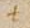 - ABBREVIATION VEL
 - ABBREVIATION ID EST
- ABBREVIATION ID EST
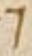 - ABBREVIATION ET
 - ABBREVIATION EST
- ABBREVIATION EST
 - ABBREVIATION INSULAR QUAE
- ABBREVIATION INSULAR QUAE
 - ABBREVIATION QUAE
- ABBREVIATION QUAE
Signs for construe marks:
 - CONSTRUE MARK TWO HORIZONTAL DOTS, DISTIGME - (marks words syntactically connected)
- CONSTRUE MARK TWO HORIZONTAL DOTS, DISTIGME - (marks words syntactically connected)
 - CONSTRUE MARK DOT WITH RIGHT HALF RING INSULAR QUOTATION SIGN - (marks the main verb in the sentence)
- CONSTRUE MARK DOT WITH RIGHT HALF RING INSULAR QUOTATION SIGN - (marks the main verb in the sentence)
 - CONSTRUE MARK TWO VERTICAL DOTS, DICOLON - (marks words syntactically connected)
- CONSTRUE MARK TWO VERTICAL DOTS, DICOLON - (marks words syntactically connected)
 - CONSTRUE MARK CONVERGING STROKES WITH DOT ABOVE - (marks words syntactically connected)
- CONSTRUE MARK CONVERGING STROKES WITH DOT ABOVE - (marks words syntactically connected)
 - CONSTRUE MARK TWO CONVERGING STROKES-DIPLE - (marks words syntactically connected)
- CONSTRUE MARK TWO CONVERGING STROKES-DIPLE - (marks words syntactically connected)
Reference signs:
 - REFERENCE SIGN DISTIGME VIRGA
- REFERENCE SIGN DISTIGME VIRGA
 - REFERENCE SIGN INVERTED N WITH DOT BELOW
- REFERENCE SIGN INVERTED N WITH DOT BELOW
 - REFERENCE SIGN INVERTED CRYPHIA
- REFERENCE SIGN INVERTED CRYPHIA
 - REFERENCE SIGN HALF RING WITH INNER DOT
- REFERENCE SIGN HALF RING WITH INNER DOT
 - REFERENCE SIGN HALF RING DOT STROKE
- REFERENCE SIGN HALF RING DOT STROKE
 - REFERENCE SIGN CRYPHIA
- REFERENCE SIGN CRYPHIA
 - REFERENCE SIGN DISTIGME
- REFERENCE SIGN DISTIGME
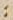 - REFERENCE SIGN DICOLON
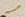 - REFERENCE SIGN VIRGA
 - REFERENCE SIGN DOTTED VIRGA
- REFERENCE SIGN DOTTED VIRGA
 - REFERENCE SIGN DOT VIRGA
- REFERENCE SIGN DOT VIRGA
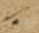 - REFERENCE SIGN VIRGA DOT
 - REFERENCE SIGN TRIGON
- REFERENCE SIGN TRIGON
 - REFERENCE SIGN INVERTED TRIGON
- REFERENCE SIGN INVERTED TRIGON
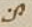 - REFERENCE SIGN DOTTED S
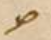 - REFERENCE SIGN BALLOON
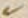 - REFERENCE SIGN OBLIQUE V
 - REFERENCE SIGN DISTIGME VIRGA BELOW
- REFERENCE SIGN DISTIGME VIRGA BELOW
 - REFERENCE SIGN QUADRIGON
- REFERENCE SIGN QUADRIGON
 - REFERENCE SIGN ELONGATED M
- REFERENCE SIGN ELONGATED M
 - REFERENCE SIGN HOOK
- REFERENCE SIGN HOOK
 - REFERENCE SIGN OCULUS
- REFERENCE SIGN OCULUS
 - REFERENCE SIGN LEMMA LEMMA 1
- REFERENCE SIGN LEMMA LEMMA 1
 - REFERENCE SIGN LEMMA LEMMA 2
- REFERENCE SIGN LEMMA LEMMA 2
 - REFERENCE SIGN LEMMA LEMMA 3
- REFERENCE SIGN LEMMA LEMMA 3
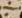 - REFERENCE SIGN DOTTED OBELUS
 - REFERENCE SIGN CURSIVE ZETA
- REFERENCE SIGN CURSIVE ZETA
 - REFERENCE SIGN CROSS
- REFERENCE SIGN CROSS
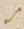 - REFERENCE SIGN S
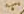 - REFERENCE SIGN WAVED OBELUS WITH UNDERDOT
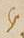 - REFERENCE SIGN Y
 - REFERENCE SIGN CONVERGING STROKES WITH DICOLON
- REFERENCE SIGN CONVERGING STROKES WITH DICOLON
Annotation signs:
 - ATTENTION SIGN NOTA
- ATTENTION SIGN NOTA
 - ATTENTION SIGN REQUIRE
- ATTENTION SIGN REQUIRE
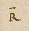 - ATTENTION SIGN REQUISITUM EST
 - ATTENTION SIGN REQUISITUM EST RX
- ATTENTION SIGN REQUISITUM EST RX
 - EXCERPTION SIGN POSITURA
- EXCERPTION SIGN POSITURA
 - EXCERPTION SIGN INVERTED PARAGRAPHUS
- EXCERPTION SIGN INVERTED PARAGRAPHUS
 - OMISSION SIGN CAPITAL DELTA
- OMISSION SIGN CAPITAL DELTA
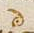 - OMISSION SIGN DOTTED D
 - OMISSION SIGN D STROKE
- OMISSION SIGN D STROKE
 - OMISSION SIGN H STROKE
- OMISSION SIGN H STROKE
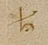 - OMISSION SIGN DOTTED H
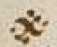 - OMISSION SIGN ASTERISCUS
Praefatio
II 1,0 (1r,1) Priscianus Caesariensis grammaticus (1r,2) Iuliano consuli ac patricio
Text variation:
Edition: Caesariensis
Id: tv-1-0-1
Rubrication:
Edition: Priscianus ... patricio
Id: rubr-1-0-1
II 1,1 (1r,3) cum omnis eloquentiae doctrinam et omne studiorum genus
Rubrication:
Edition: cum
Id: rubr-1-0-2
II 1,2 sapientiae luce (1r,4) 〈praeful - C. G.〉 gens a Graecorum fontibus deriuatum Latinos proprio
II 1,3 sermone inuenio celebrasse et in omni (1r,5) bus illorum uestigia liberalibus
Gloss:
Gloss:
Gloss:
Gloss:
Gloss:
Gloss:
Gloss:
Gloss:
II 1,4 consecutos artibus uideo , nec solum ea, quae emendate ab illis sunt prolata, (1r,6) sed
Gloss:
Gloss:
Text variation:
Edition: ea
Id: tv-1-4-1
Text variation:
Edition: prolata
interlinear above
main scribe
syntactical glosses using symbols
Id: tv-1-4-2
Gloss:
II 1,5 etiam quosdam errores eorum amore grecorum ( main scribe) doctorum deceptos imitari, in quibus
Gloss:
Reference sign:
Edition: quibus
Id: rs-1-5-1
Gloss:
II 1,6 maxime uetustissi (1r,7) ma grammatica ars arguitur peccasse, cuius auctores,
Gloss:
Gloss:
Gloss:
II 1,7 quanto sunt iuniores, tanto perspicaciores, et ingeniis floruisse (1r,8) et
Gloss:
Gloss:
Gloss:
II 1,8 diligentia ualuisse omnium iudicio confirmantur eruditissimorum (quid enim
Gloss:
Gloss:
II 1,9 Herodiani artibus certius, quid (1r,9) Apollonii scrupulosis quaestionibus
Gloss:
Gloss:
II 1,10 enucleatius possit inueniri?) cum igitur eos omnia fere uitia , quaecumque
Reference sign:
Edition: enucleatius
Id: rs-1-10-1
Gloss:
Gloss:
Gloss:
Gloss:
Gloss:
Gloss:
Gloss:
II 1,11 antiquorum Grae (1r,10) corum commentariis sunt relicta artis grammaticae ,
Reference sign:
Edition: commentariis
interlinear above
Reference sign: lemma - gloss
Id: rs-1-11-1
Gloss:
Gloss:
Gloss:
II 1,12 expurgasse comperio certisque rationis legibus emendasse, (1r,11) nostrorum autem
Gloss:
Gloss:
Gloss:
Gloss:
II 1,13 neminem post illos imitatorem eorum extitisse, quippe in neglegentiam
Gloss:
Praefatio (continued)
II 2,1 cadentibus studiis literarum (1r,12) propter inopiam scriptorum, quamuis audacter,
Gloss:
II 2,2 sed non impudenter, ut puto, conatus sum pro uiribus rem arduam
Text variation:
Edition: impudenter
Id: tv-2-2-1
Reference sign:
Edition: impudenter
Id: rs-2-2-1
Gloss:
Gloss:
Gloss:
Gloss:
Gloss:
Gloss:
Gloss:
II 2,3 quidem, sed officio professionis non indebitam, supra nominatorum praecepta
Gloss:
II 2,4 uirorum, quae congrua sunt (1r,14) uisa, in Latinum transferre sermonem, collectis
II 2,5 etiam omnibus fere, quaecumque necessaria nostrorum quoque inueniuntur (1r,15)
II 2,6 artium commentariis grammaticorum, quod gratum fore credidi
Gloss:
II 2,7 temperamentum, si ex utriusque linguae modera (1r,16) toribus elegantiora in unum
Reference sign:
Edition: moderatoribus
Id: rs-2-7-1
Gloss:
Gloss:
II 2,8 coeant corpus meo labore faciente, quia nec uituperandum me esse credo, si
Gloss:
II 2,9 eos imitor, (1r,17) qui principatum inter scriptores Graios artis grammaticae
II 2,10 possident, cum ueteres nostri in erroribus etiam, ut dic (1r,18) tum est, Graecos
II 2,11 aequiperantes maximam tamen laudem sunt consecuti.
Text variation:
Edition: aequiperantes
Id: tv-2-11-1
Reference sign:
Edition: equipperantes
Id: rs-2-11-1
Gloss:
Text variation:
Edition: laudem sunt
Id: tv-2-11-2
II 2,12 exemplum etiam proponere placuit, ne pi (1r,19) geat alios etiam a me uel
II 2,13 ignorantia forte praetermissa uel uitiose dicta (nihil enim ex omni parte
II 2,14 perfectum in huma (1r,20) nis inuentionibus esse posse credo) sua quoque
Text variation:
Edition: inuentionibus esse posse credo) sua
Id: tv-2-14-1
Reference sign:
Edition: sua
Id: rs-2-14-1
Reference sign:
Edition: sua
Id: rs-2-14-2
Gloss:
II 2,15 industria ad communem literatoriae professionis utilitatem congrua ratio (1r,21) nis
II 2,16 proportione uel addere uel mutare tractantes. namque festinantius quam
Gloss:
II 2,17 uolui hos edere me libros compule (1r,22) runt, qui alienis laboribus insidiantes
Gloss:
II 2,18 furtimque et quasi per latrocinia scripta aliis subripientes unius nominis ad (1r,23)
II 2,19 titulum pertinentis infanda mutatione totius operis in se gloriam transferre
Gloss:
Explanation:
II 2,20 conantur. sed quoniam in tanta operis (1r,24) materia impossibile est aliquid
Text variation:
Edition: impossibile
Id: tv-2-20-1
II 2,21 perfectum breuiter exponi, spatii quoque ueniam peto, quamuis ad
Text variation:
Edition: perfectum breuiter
Id: tv-2-21-1
Gloss:
II 2,22 Herodiani scriptorum (1r,25) pelagus et ad eius patris Apollonii spatiosa uolumina
Text variation:
Edition: patris
Id: tv-2-22-1
II 2,23 meorum compendiosa sunt existimanda scripta librorum.
II 2,24 huius (1r,26) tamen operis te hortatorem sortitus iudicem quoque facio,
II 2,25 Iuliane consul ac patricie, cui summos dignitatis gra (1r,27) dus summa
Gloss:
Emendation:
Edition: patricie
Id: emendation-2-25-1
II 2,26 adquisiuit in omni studio ingenii claritudo, non tantum accipiens ab excelsis
II 2,27 gradibus honorum (1r,28) pretii, quantum illis decoris addens tui, cuius mentem
II 2,28 tam Homeri credo quam Virgilii anima constare, quo (1r,29) rum uterque
II 2,29 arcem possederat musicae, te tertium ex utroque compositum esse
Text variation:
Edition: arcem
Id: tv-2-29-1
Reference sign:
Codex 50: artem
interlinear above
second glossator
Reference sign: lemma - gloss
Id: rs-2-29-1
Gloss:
Emendation:
Edition: possederat
Id: emendation-2-29-1
Text variation:
Edition: esse
Id: tv-2-29-2
II 2,30 confirmans, quippe non minus (1r,30) Graecorum quam Latinorum in omni doctrinae
II 2,31 genere praefulgentem. tibi ergo hoc opus deuoueo, omnis (1r,31) eloquentiae
Emendation:
Edition: genere
Id: emendation-2-31-1
Gloss:
Praefatio (continued)
II 3,1 praesul, ut quantamcumque mihi deus annuerit suscepti laboris gloriam,
Reference sign:
Edition: quantamcumque
Id: rs-3-1-1
Reference sign:
Edition: gloriam
Id: rs-3-1-2
Gloss:
Gloss:
Gloss:
II 3,2 te comite quasi sole quodam dilu (1r,32) cidius crescat.
II 3,3 titulos etiam uniuersi operis per singulos supposui libros, quo
II 3,4 facilius, quicquid ex his quaeratur, dis (1r,33) cretis possit locis inueniri.
Emendation:
Edition: inueniri
Id: emendation-3-4-1
II 3,5 primus liber continet de uoce et eius speciebus; de litera: quid sit
Rubrication:
Edition: primus
Id: rubr-3-5-1
II 3,6 litera, de eius generibus (1r,34) et speciebus, de singularum potestate, quae in
II 3,7 quas transeunt per declinationes uel compositiones partium orationis.
II 3,8 secundus (1r,35) de syllaba: quid sit syllaba, quot literis constare potest et
Text variation:
Edition: secundus
Id: tv-3-8-1
II 3,9 quo ordine et quo sono, de accidentibus singulis syllabis; (1v) (1v,1) de dictione: quid
Emendation:
Edition: accidentibus
Id: emendation-3-9-1
II 3,10 sit dictio, quae eius differentia ad syllabam; de oratione: quid sit oratio,
Emendation:
Edition: eius
Id: emendation-3-10-1
II 3,11 quot eius partes, de earum proprietate; de nomine: (1v,2) quid sit nomen, de
II 3,12 accidentibus ei, quot sunt species propriorum nominum, quot
II 3,13 appellatiuorum, quot adiectiuorum, quot deriuatiuorum; de patro (1v,3) nymicis: quot eorum
Text variation:
Edition: patronymicis
Id: tv-3-13-1
II 3,14 formae, quomodo deriuantur, ex quibus primitiuis; de diuersis
II 3,15 possessiuorum terminationibus et eorum regulis.
II 3,16 tertius de com (1v,4) paratiuis et superlatiuis et eorum diuersis extremitatibus:
Text variation:
Edition: tertius
Id: tv-3-16-1
Rubrication:
Edition: de
Id: rubr-3-16-1
II 3,17 ex quibus positiuis et qua ratione formantur; de diminutiuis: quot eorum
II 3,18 species, ex quibus (1v,5) declinationibus nominum, quomodo formantur.
II 3,19 quartus de denominatiuis et uerbalibus et participialibus et
Text variation:
Edition: quartus
Id: tv-3-19-1
Rubrication:
Edition: de
Id: rubr-3-19-1
II 3,20 aduerbialibus: quot eorum species, (1v,6) ex quibus primitiuis, quomodo nascuntur.
II 3,21 quintus de generibus dinoscendis per singulas terminationes; de
Text variation:
Edition: quintus
Id: tv-3-21-1
Rubrication:
Edition: de
Id: rubr-3-21-1
II 3,22 numeris; de figuris et earum compage; de casu. (1v,7)
II 3,23 sextus de nominatiuo casu per singulas extremitates omnium
Text variation:
Edition: sextus
Id: tv-3-23-1
Rubrication:
Edition: de
Id: rubr-3-23-1
II 3,24 nominum, tam in uocales quam in consonantes desinentium, per ordinem; de
II 3,25 genetiuorum (1v,8) tam ultimis quam paenultimis syllabis.
II 3,26 septimus de ceteris obliquis casibus, tam singularibus quam pluralibus.
Text variation:
Edition: septimus
Id: tv-3-26-1
Rubrication:
Edition: de
Id: rubr-3-26-1
Praefatio (continued)
II 4,1 octauus de uerbo et eius accidentibus. (1v,9)
Text variation:
Edition: octauus
Id: tv-4-1-1
Rubrication:
Edition: de
Id: rubr-4-1-1
Text variation:
Edition: eius
Id: tv-4-1-2
II 4,2 nonus de regulis generalibus omnium coniugationum.
Text variation:
Edition: nonus
Id: tv-4-2-1
Rubrication:
Edition: de
Id: rubr-4-2-1
II 4,3 decimus de praeterito perfecto.
Text variation:
Edition: decimus
Id: tv-4-3-1
Rubrication:
Edition: de
Id: rubr-4-3-1
II 4,4 undecimus de participio.
Text variation:
Edition: undecimus
Id: tv-4-4-1
Rubrication:
Edition: de
Id: rubr-4-4-1
II 4,5 duodecimus et tertiusdecimus de pronomine. (1v,10)
II 4,6 quartusdecimus de praepositione.
Text variation:
Edition: quartusdecimus
Id: tv-4-6-1
Rubrication:
Edition: de
Id: rubr-4-6-1
II 4,7 quintusdecimus de aduerbio et interiectione.
Text variation:
Edition: quintusdecimus
Id: tv-4-7-1
Rubrication:
Edition: de
Id: rubr-4-7-1
II 4,8 sextusdecimus de coniunctione.
Text variation:
Edition: sextusdecimus
Id: tv-4-8-1
Rubrication:
Edition: de
Id: rubr-4-8-1
II 4,9 septimusdecimus et octauusdecimus de constructione siue (1v,11) ordinatione
II 4,10 partium orationis inter se.
Liber Primus
II 5,0 INCIPIT ARS PRISCIANI GRAMMATICI CESARIENSIS (red capitalis rustica main scribe) liber primus de uoce
Text variation:
Edition: liber primus
Id: tv-5-0-2
Rubrication:
Edition: de uoce
Id: rubr-5-0-1
Gloss:
II 5,1 (1v,12) philosophi definiunt, uocem esse aerem tenuissimum ictum uel suum
Rubrication:
Edition: philosophi
Id: rubr-5-1-1
Reference sign:
Edition: philosophi
interlinear above
Reference sign: lemma - gloss
Id: rs-5-1-1
Reference sign:
Edition: philosophi
Id: rs-5-1-4
Gloss:
Gloss:
Gloss:
Reference sign:
Edition: uocem
interlinear above
second glossator
Reference sign: lemma - gloss
Id: rs-5-1-2
Gloss:
Gloss:
Gloss:
Reference sign:
Edition: ictum
interlinear above
second glossator
Reference sign: lemma - gloss
Id: rs-5-1-3
Gloss:
Gloss:
II 5,2 sensibile aurium, id est quod proprie auribus ac (1v,13) cidit. et est prior definitio
Gloss:
Gloss:
Gloss:
Gloss:
Gloss:
II 5,3 a substantia sumpta, altera uero a notione, quam Graeci ἔννοιαν dicunt,
Text variation:
Edition: ἔννοιαν
Id: tv-5-3-1
Reference sign:
Edition: a substantia
interlinear above
second glossator
Reference sign: lemma - gloss
Id: rs-5-3-1
Gloss:
Gloss:
II 5,4 hoc est ab accidentibus. (1v,14) accidit enim uoci auditus, quantum in ipsa est.
Reference sign:
Edition: enim
interlinear above
second glossator
Reference sign: lemma - lemma
Id: rs-5-4-1
Gloss:
Reference sign:
Edition: quantum
Id: rs-5-4-2
Gloss:
Gloss:
II 5,5 uocis autem differentiae sunt quattuor: articulata, inarticulata, literata, (1v,15)
Reference sign:
Edition: differentiae
interlinear above
second glossator
Reference sign: lemma - lemma
Id: rs-5-5-1
II 5,6 illiterata. articulata est, quae coartata, hoc est copulata cum aliquo sensu
Gloss:
Gloss:
II 5,7 mentis eius, qui loquitur, profertur. inarticulata (1v,16) est contraria, quae a nullo
Rubrication:
Edition: inarticulata
Id: rubr-5-7-1
Gloss:
Gloss:
II 5,8 affectu proficiscitur mentis. literata est, quae scribi potest, illiterata, quae
Gloss:
II 5,9 scribi non potest. inue (1v,17) niuntur igitur quaedam uoces articulatae, quae
Gloss:
II 5,10 possunt scribi et intellegi, ut:
II 5,11 «arma uirumque cano»,
II 5,12 quaedam, quae non possunt scribi, (1v,18) intelleguntur tamen, ut sibili hominum
Gloss:
II 5,13 et gemitus: hae enim uoces , quamuis sensum aliquem significent proferentis
Reference sign:
Edition: enim
interlinear above
second glossator
Reference sign: lemma - lemma
Id: rs-5-13-1
Gloss:
II 5,14 eas, scribi tamen non possunt. (1v,19) aliae autem sunt, quae, quamuis scribantur,
Gloss:
II 5,15 tamen inarticulatae dicuntur, cum nihil significent, ut coax, cra. Eas enim uoces quanquam (1v,20) Intellegimus de quo sint uolucre profectę, tamen inarticulatae dicuntur, quia uox ut superius Inarticulata est quę a nullo affectu (1v,21) proficiscitur. ( main scribe) aliae
Explanation:
Gloss:
Gloss:
Reference sign:
Codex 50: affectu
interlinear above
second glossator
Reference sign: lemma - gloss
Id: rs-5-15-1
Gloss:
Gloss:
Liber Primus (continued)
II 6,1 uero sunt inarticulatae et illiteratae, quae nec scribi possunt nec intellegi,
II 6,2 ut |ABBREVIATION EST| crepitus, mugitus et similia. scire autem debemus, (1v,22) quod has quattuor
Reference sign:
Codex 50: scire
interlinear above
second glossator
Reference sign: lemma - gloss
Id: rs-6-2-1
Gloss:
II 6,3 species uocum perficiunt quattuor superiores differentiae generaliter uoci
Gloss:
Reference sign:
Edition: differentiae
interlinear above
second glossator
Reference sign: lemma - lemma
Id: rs-6-3-1
II 6,4 accidentes, binae per singulas inuicem coeuntes. (1v,23) uox autem dicta est uel
Text variation:
Edition: est uel
Id: tv-6-4-1
Emendation:
Edition: accidentes
Id: emendation-6-4-1
Reference sign:
Edition: accidentes
interlinear above
second glossator
Reference sign: lemma - gloss
Id: rs-6-4-1
Gloss:
Gloss:
Gloss:
Rubrication:
Edition: uox
Id: rubr-6-4-1
II 6,5 a uocando, ut dux a ducendo, uel ἀπὸ τοῦ βοῶ , ut quibusdam placet.
Gloss:
Emendation:
Edition: ἀπὸ τοῦ βοῶ
Id: emendation-6-5-1
Gloss:
Gloss:
II 6,6 de litera
Rubrication:
Edition: de litera
Id: rubr-6-6-1
II 6,7 litera est pars mini (1v,24) ma uocis compositae, hoc est uox ( main scribe) quae constat
Rubrication:
Edition: litera
Id: rubr-6-7-1
Reference sign:
Edition: litera
Id: rs-6-7-1
Gloss:
Gloss:
Reference sign:
Edition: compositae
Id: rs-6-7-2
Gloss:
II 6,8 compositione literarum, minima autem, quantum ad totam comprehensionem
Gloss:
Gloss:
Gloss:
Reference sign:
Edition: quantum
Id: rs-6-8-1
Gloss:
Reference sign:
Edition: ad totam
Id: rs-6-8-2
Gloss:
II 6,9 uocis (1v,25) literatae (ad hanc enim etiam productae uocales breuissimae
Gloss:
Reference sign:
Gloss:
II 6,10 partes inueniuntur) uel quod omnium est breuissimum eorum, (1v,26) quae diuidi
II 6,11 possunt, id quod diuidi non potest. possumus et sic definire: litera |ABBREVIATION EST| uox,
II 6,12 quae scribi potest indiuidua.
II 6,13 dicitur autem lit (1v,27) era uel quasi legitera, quod legendi iter praebeat,
Reference sign:
Gloss:
II 6,14 uel a lituris, ut quibusdam placet, quod plerumque in ceratis tabulis
Gloss:
Text variation:
Edition: in
Id: tv-6-14-1
II 6,15 antiqui scri (1v,28) bere solebant litteris ( main scribe) . literas autem etiam elementorum uocabulo
Text variation:
Edition: antiqui
Id: tv-6-15-2
II 6,16 nuncupauerunt ad similitudinem mundi elementorum: sicut enim illa coeun (1v,29) tia omne
Gloss:
II 6,17 perficiunt corpus, sic etiam haec coniuncta literalem uocem quasi corpus
II 6,18 aliquod componunt uel magis uere cor (1v,30) pus. nam si aer corpus |ABBREVIATION EST| et uox,
Gloss:
Emendation:
Edition: si
Id: emendation-6-18-1
Gloss:
II 6,19 quae ex aere icto constat, corpus esse ostenditur, quippe cum et tangit
II 6,20 aurem et tripertito (1v,31) diuiditur, quod |ABBREVIATION EST| suum corporis, hoc |ABBREVIATION EST| in ( main scribe)
II 6,21 altitudinem, latitudinem, longitudinem, unde ex omni quoque parte pot |ABBREVIATION EST| audiri.
Text variation:
Edition: ex omni quoque parte
Id: tv-6-21-1
Gloss:
Gloss:
Gloss:
Edition: altitudinem, latitudinem, longitudinem
II 6,22 praeterea (1v,32) tamen singulae syllabae altitudinem quidem habent in tenore,
Rubrication:
Edition: praeterea
Id: rubr-6-22-1
II 6,23 crassitudinem uero uel latitudinem in spiritu, longitudinem in tempore. (1v,33)
Edition: longitudinem in tempore
II 6,24 litera igitur |ABBREVIATION EST| nota elementi et uelut imago quaedam uocis literatae,
II 6,25 quae cognoscitur ex qualitate et quantitate figurae linearum. (1v,34) hoc ergo
Rubrication:
Edition: hoc
Id: rubr-6-25-1
II 6,26 interest inter elementa et literas, quod elementa proprie dicuntur ipsae
Gloss:
Liber Primus (continued)
II 7,1 pronuntiationes, notae autem earum literae. (1v,35) abusiue tamen et elementa pro
Reference sign:
Edition: abusiue
Id: rs-7-1-1
Gloss:
II 7,2 literis et literae pro elementis uocantur. cum enim dicimus non posse
II 7,3 constare in eadem syllaba r (1v,36) ante p, non de literis dicimus, sed de
II 7,4 pronuntiatione earum: nam quantum ad scripturam possunt coniungi, non tamen
II 7,5 etiam enuntiari, (1v,37) nisi postposita r.
II 7,6 sunt igitur figurae literarum quibus nos utimur uiginti tres, ipsae
Rubrication:
Edition: sunt
Id: rubr-7-6-1
Text variation:
Edition: igitur
Id: tv-7-6-1
Text variation:
Edition: uiginti tres
Id: tv-7-6-2
II 7,7 uero pronuntiationes earum multo ampliores, quip (1v,38) pe cum singulae uocales
II 7,8 denos inueniantur sonos habentes uel plures, ut puta a litera breuis
Gloss:
Gloss:
II 7,9 quattuor habet soni diffe (1v,39) rentias, (2r) (2r,1) cum habet aspirationem et acuitur uel
II 7,10 grauatur, et rursus cum sine aspiratione acuitur |ABBREVIATION VEL| grauatur, ut hábeo
II 7,11 hàbemus, ábeo àbimus. (2r,2) longa uero eadem sex modis sonat: cum habet
Rubrication:
Edition: longa
Id: rubr-2-0-1
II 7,12 aspirationem et acuitur |ABBREVIATION VEL| grauatur uel circumflectitur et rursus cum sine
II 7,13 aspiratione (2r,3) acuitur uel grauatur uel circumflectitur, ut hámis hàmorum
Text variation:
Edition: hàmorum
inline
main scribe
Id: tv-7-13-1
II 7,14 hâmus, árae àrarum âra. similiter aliae uocales possunt pro (2r,4) ferri.
Gloss:
Text variation:
Edition: àrarum
inline
main scribe
Id: tv-7-13-2
Text variation:
Edition: âra.
inline
main scribe
Id: tv-7-13-3
II 7,15 praeterea tamen i et u uocales, quando mediae sunt, alternos inter
Rubrication:
Edition: praeterea
Id: rubr-2-0-2
II 7,16 se sonos uidentur confundere, teste Donato, ut uir, (2r,5) optumus, quis.
Emendation:
Edition: optumus
Id: emendation-7-16-1
II 7,17 et i quidem, quando post u consonantem loco digamma functam Aeolici
II 7,18 ponitur breuis, sequente d |ABBREVIATION VEL| m (2r,6) uel r uel t uel x, sonum y Graecae
II 7,19 uidetur habere, ut uideo, uim, uirtus, uitium, uix, u autem,
Rubrication:
Edition: u autem
Id: rubr-2-0-3
II 7,20 quamuis contractum, eun (2r,7) dem tamen [hoc est y] sonum habet, inter q et e uel
Reference sign:
Edition: contractum
Id: rs-7-20-1
Gloss:
Emendation:
Edition: inter
Id: emendation-7-20-1
II 7,21 i uel ae diphthongum positum, ut que, quis, quae, nec non inter
Text variation:
Edition: diphthongum
Id: tv-7-21-1
II 7,22 g et eas (2r,8) dem uocales, cum in una syllaba sic inuenitur, ut pingue,
II 7,23 sanguis, linguae.
II 7,24 in consonantibus etiam sunt differentiae plures, trans (2r,9) euntium in alias
Rubrication:
Edition: in consonantibus
Id: rubr-7-24-1
Text variation:
Edition: sunt differentiae plures
Id: tv-7-24-1
II 7,25 et non transeuntium, quippe diuersae sunt potestatis.
II 7,26 accidit igitur literae nomen, figura, potestas:
Rubrication:
Edition: accidit
Id: rubr-7-26-1
Gloss:
II 7,27 nomen, (2r,10) uelut a, b. et sunt indeclinabilia tam apud Graecos
Liber Primus (continued)
II 8,1 elementorum nomina quam apud Latinos, siue quod a barbaris inuen (2r,11) ta dicuntur,
Edition: dicuntur
Emendation:
Edition: dicuntur
Id: emendation-8-1-1
II 8,2 quod esse ostendit Varro in II de antiquitate literarum, docens
Text variation:
Id: tv-8-2-1
II 8,3 lingua Chaldaeorum singularum nomina literarum ad earum formas esse facta
Text variation:
Id: tv-8-3-1
II 8,4 et ex hoc certum fieri, eos esse primos auctores literarum, siue quod
Text variation:
Id: tv-8-4-1
II 8,5 simplicia haec et stabilia esse debent quasi fundamentum omnis doctrinae
II 8,6 immobile, siue quod nec aliter (2r,12) apud Latinos poterant esse, cum a suis
II 8,7 uocibus uocales nominentur, semiuocales uero in se desinant, mutae a se
Gloss:
II 8,8 incipientes uo (2r,13) cali terminentur, quas si flectas, significatio quoque nominum
II 8,9 una euanescit.
Reference sign:
Edition: una
interlinear above
Reference sign: lemma - gloss
Id: rs-8-9-1
Gloss:
II 8,10 uocales igitur, ut dictum est, per se prolatae no (2r,14) men suum ostendunt,
Rubrication:
Edition: uocales
Id: rubr-8-10-1
II 8,11 semiuocales uero ab e incipientes et in se terminantes, absque x, quae sola ( main scribe) ab
Rubrication:
Edition: semiuocales
Id: rubr-8-11-1
II 8,12 i incipit per anastrophen (2r,15) Graeci nominis ξῖ , quia necesse fuit, cum sit
Text variation:
Edition: anastrophen
Id: tv-8-12-1
Reference sign:
Codex 50: apostrophen
Id: rs-8-12-1
Gloss:
Text variation:
Edition: ξῖ
Id: tv-8-12-2
II 8,13 semiuocalis, a uocali incipere et in se terminare, quae nouissime a Latinis (2r,16)
Gloss:
II 8,14 assumpta post omnes ponitur literas, quibus Latinae dictiones egent (quod
II 8,15 autem ab i incipit eius nomen, ostendit etiam Ser (2r,17) uius in commento
II 8,16 quod scribit in Donatum his uerbis: semiuocales sunt septem,
Text variation:
Edition: scribit
Id: tv-8-16-1
Text variation:
Edition: septem
Id: tv-8-16-2
II 8,17 quae ita proferuntur, ut inchoent ab e litera (2r,18) et desinant in
II 8,18 naturalem sonum, ut ef, el, em, en, er, es, ix. sed ix ab i
Text variation:
Edition: sed ix
Id: tv-8-18-1
II 8,19 inchoat. id etiam Eutropius confirmat dicens: (2r,19) una duplex ix, quae
Text variation:
Edition: ix
Id: tv-8-19-1
II 8,20 ideo ab i incipit, quia apud Graecos in eandem desinit), mutae
Rubrication:
Edition: mutae
Id: rubr-8-20-1
II 8,21 autem a se incipientes et in e uocalem (2r,20) desinentes, exceptis q et k,
II 8,22 quarum altera in u, altera in a finitur, sua conficiunt nomina. h enim
II 8,23 aspirationis ma (2r,21) gis est nota.
Liber Primus (continued)
II 9,1 Figurae accidunt quas uidemus in singulis literis.
Rubrication:
Edition: Figurae
Id: rubr-9-1-1
II 9,2 Potestas autem ipsa pronuntiatio, propter quam et figurae (2r,22) et nomina
Rubrication:
Edition: Potestas
Id: rubr-9-2-1
Gloss:
Explanation:
Gloss:
Reference sign:
Codex 50: nomina
Id: rs-9-2-1
Gloss:
II 9,3 facta sunt. quidam addunt etiam ordinem, sed pars est potestatis
II 9,4 literarum.
II 9,5 ex his uocales dicuntur, quae per se (2r,23) uoces perficiunt uel sine quibus
II 9,6 uox literalis proferri non potest, unde et nomen hoc praecipue sibi
II 9,7 defendunt; ceterae enim, quae (2r,24) cum his proferuntur, consonantes appellantur.
Reference sign:
Codex 50: defendunt
Id: rs-9-7-1
Gloss:
II 9,8 sunt igitur uocales numero quinque: a e i o u. utimur autem ( main scribe) etiam y
Rubrication:
Edition: sunt
Id: rubr-9-8-1
Text variation:
Edition: quinque
Id: tv-9-8-2
II 9,9 Graecorum cau (2r,25) sa nominum.
II 9,10 consonantium autem aliae sunt semiuocales, aliae mutae:
Text variation:
Edition: sunt
Id: tv-9-10-1
II 9,11 semiuocales sunt, ut plerisque Latinorum placuit, (2r,26) septem: f l m n r
Text variation:
Edition: septem
Id: tv-9-11-1
Edition: f
interlinear below
excerption sign inverted paragraphus
II 9,12 s x; sed f multis modis ostenditur muta magis, de qua post docebimus.
Edition: docebimus
II 9,13 z quoque utimur in Graecis dic (2r,27) tionibus. hae ergo [hoc est semiuocales]
II 9,14 quantum uincuntur a uocalibus, tantum superant mutas. ideo apud
II 9,15 Graecos quidem (2r,28) omnes dictiones uel in uocales uel in semiuocales, quae
II 9,16 secundam habent euphoniam, desinunt, quam nos sonoritatem possu (2r,29) mus dicere,
Reference sign:
Codex 50: secundam
Id: rs-9-16-1
Gloss:
II 9,17 apud Latinos autem ex maxima parte, non tamen omnes, inueniuntur
II 9,18 enim quaedam etiam in mutas desinentes. semi (2r,30) uocales autem sunt
Rubrication:
Edition: semiuocales
Id: rubr-9-18-1
II 9,19 appellatae, quae plenam uocem non habent, ut semideos et semiuiros
Reference sign:
Codex 50: semideos
Id: rs-9-19-1
Gloss:
Gloss:
II 9,20 appellamus, non qui dimidiam partem (2r,31) habent deorum |ABBREVIATION VEL| uirorum, sed qui
II 9,21 pleni dii uel uiri non sunt.
II 9,22 reliquae sunt mutae, ut quibusdam uidetur, numero nouem: (2r,32) b c d g
Text variation:
Edition: nouem
Id: tv-9-22-1
II 9,23 h k p q t. et sunt qui non bene hoc nomen putant eas accepisse, cum
Text variation:
Edition: eas
Id: tv-9-23-1
II 9,24 hae quoque pars sint uocis. qui nesciunt, quod ad (2r,33) comparationem bene
II 9,25 sonantium ita sint nominatae, uelut informis dicitur mulier, non quae
Emendation:
Edition: uelut
Id: emendation-9-25-1
II 9,26 caret forma, sed |ABBREVIATION QUAE| male est (2r,34) formata, et frigidum dicimus eum, qui
II 9,27 non penitus expers est caloris, sed qui minimo hoc utitur: sic igitur etiam
Gloss:
Explanation:
II 9,28 mutas, non (2r,35) quae omnino uoce carent, sed quae exiguam partem uocis
II 9,29 habent.
II 9,30 uocales apud Latinos omnes sunt ancipites uel liquidae, (2r,36) hoc est quae
Gloss:
II 9,31 facile modo produci modo corripi possunt, sicut etiam apud antiquissimos
II 9,32 erant Graecorum ante inuentio (2r,37) nem η et ω , quibus inuentis ε et ο , quae
Text variation:
Edition: η et ω
Id: tv-9-32-1
Liber Primus (continued)
II 10,1 ante ancipites erant, remanserunt perpetuo breues, cum earum
Text variation:
Edition: perpetuo
Id: tv-10-1-1
Reference sign:
Edition: ancipites
Id: rs-10-1-1
Gloss:
II 10,2 productarum loca (2r,38) possessa sint a supra dictis uocalibus semper longis.
Text variation:
Edition: sint
Id: tv-10-2-1
II 10,3 sunt etiam in consonantibus longae, ut puta duplices x et z: sicut
Rubrication:
Edition: sunt
Id: rubr-10-3-1
II 10,4 enim (2v) (2v,1) longae uocales, sic hae quoque longam faciunt syllabam. sunt
Rubrication:
Edition: sunt
Id: rubr-10-4-1
Gloss:
II 10,5 similiter ancipites uel liquidae, ut l r, quae modo longam modo breuem (2v,2) post
Gloss:
II 10,6 mutas positae in eadem syllaba faciunt syllabam. his quidam addunt non
II 10,7 irrationabiliter m et n, quia ipsae quoque commu (2v,3) nes faciunt syllabas post
II 10,8 mutas positae, quod diuersorum confirmatur auctoritate tam Graecorum
II 10,9 quam Latinorum. Ouidius in X me (2v,4) tamorphoseon:
Reference sign:
Edition: metamorphoseon
Id: rs-10-9-1
Gloss:
II 10,10 «piscosamque Cnidon grauidamque Amathunta metallis».
Gloss:
Gloss:
II 10,11 Euripides in Phoenissis:
II 10,12 «† ἰσότητ᾽ ἔταξεν κᾀριθμὸν διώρισε (2v,5) ν ».
Text variation:
Id: tv-10-12-1
II 10,13 idem in eisdem:
Text variation:
Edition: eisdem
Id: tv-10-13-1
II 10,14 «ἀπωλόμεσθα, δύο κακὼ σπεύδεις, τέκνον ».
Text variation:
above
main scribeꞶΔo N M
interlinear above
main scribeeCea δYꞶ kakꞶCCITeS δeIS TekNON·
Id: tv-10-14-1
Gloss:
II 10,15 inuenitur tamen m etiam ante n positum, nec producens ante se uocalem
II 10,16 (2v,6) more mutarum.
II 10,17 Καλλίμαχος ·
Text variation:
Id: tv-10-17-1
II 10,18 «τὼς μὲν ὁ Μνησάρχειος ἔφη ξένος, ὧδε συναινῶ ».
Text variation:
Id: tv-10-18-1
Liber Primus (continued)
II 11,1 apud antiquissimos Graecorum non plus sedecim (2v,7) erant literae, quibus
Rubrication:
Edition: apud
Id: rubr-11-1-1
Gloss:
Text variation:
Edition: sedecim
Id: tv-11-1-1
II 11,2 ab illis acceptis Latini antiquitatem seruauerunt perpetuam. nam si
Reference sign:
Edition: perpetuam
Id: rs-11-2-1
Gloss:
II 11,3 uerissime uelimus inspicere eas [hoc (2v,8) est sedecim], non plus duas additas in
Text variation:
Edition: sedecim
Id: tv-11-3-1
Gloss:
II 11,4 Latino inueniemus sermone:
II 11,5 Ϝ Aeolicum digamma, quod apud antiquissimos Latinorum ean (2v,9) dem uim
Rubrication:
Edition: Ϝ
Id: rubr-11-5-1
Reference sign:
Edition: eandem
Id: rs-11-5-1
Gloss:
II 11,6 quam apud Aeolis habuit. eum autem prope sonum, quem nunc habet,
Text variation:
Edition: Aeolis
Id: tv-11-6-1
Gloss:
Reference sign:
Edition: nunc habet
Id: rs-11-6-1
Gloss:
II 11,7 significabat p cum aspiratione, sicut etiam apud (2v,10) ueteres Graecos pro φ π
II 11,8 et Ͱ , unde nunc quoque in Graecis nominibus antiquam scripturam
II 11,9 seruamus pro φ p et h ponentes, ut Or (2v,11) pheus, Phaethon. postea uero in
Gloss:
Gloss:
II 11,10 Latinis uerbis placuit pro p et h f scribi, ut fama, filius, facio,
II 11,11 loco autem digamma u pro con (2v,12) sonante, quod cognatione soni uidebatur
II 11,12 affinis esse digamma ea litera. quare cum f loco mutae ponatur [id est p
Text variation:
Edition: ponatur
interlinear below
main scribetur
Id: tv-11-12-1
Gloss:
II 11,13 et h siue φ ], (2v,13) miror hanc inter semiuocales posuisse artium scriptores:
II 11,14 nihil enim aliud habet haec litera semiuocalis nisi nominis prolationem, (2v,14) quae
II 11,15 a uocali incipit. sed hoc potestatem mutare literae non debuit: si enim
II 11,16 esset semiuocalis, necessario terminalis nominum inueniretur, (2v,15) quod minime
II 11,17 reperies, nec ante l uel r in eadem syllaba poni posset, qui locus
II 11,18 mutarum |ABBREVIATION EST| dum taxat, nec communem ante easdem (2v,16) posita faceret syllabam.
II 11,19 postremo Graeci, quibus in omnia doctrinae auctoribus utimur, φ , cuius
Emendation:
Edition: in omnia doctrinae
Id: emendation-11-19-1
Gloss:
Reference sign:
Edition: in omnia
interlinear above
secondary scribe
Reference sign: lemma - gloss
Id: rs-11-19-1
Gloss:
II 11,20 locum apud nos f obtinet, quod osten (2v,17) ditur in his maxime dictionibus, quas
II 11,21 a Graecis sumpsimus, hoc |ABBREVIATION EST| fama, fuga, fur, mutam esse
II 11,22 confirmant. sciendum tamen, quod hic quoque (2v,18) error a quibusdam antiquis
II 11,23 Graecorum grammaticis inuasit Latinos, qui φ et θ et χ semiuocales putabant,
Gloss:
II 11,24 nulla alia causa, nisi quod spiritus in eis a (2v,19) bundet, inducti. quod si esset
Gloss:
II 11,25 uerum, debuit c quoque |ABBREVIATION VEL| t addita aspiratione semiuocalis esse, quod
Text variation:
Edition: semiuocalis
interlinear above
main scribes
Id: tv-11-25-1
II 11,26 omni caret ratione: spiritus enim potestatem lit (2v,20) erae non mutat, unde nec
II 11,27 uocales addita aspiratione aliae fiunt et aliae ea dempta. hoc tamen scire
Liber Primus (continued)
II 12,1 debemus, quod non fixis labris (2v,21) est pronuntianda f, quomodo ph, atque
Text variation:
Edition: ph
Id: tv-12-1-1
Gloss:
II 12,2 hoc solum inter|ABBREVIATION EST| .
II 12,3 x etiam duplicem loco c et s uel g et s postea a Graecis inuentam
II 12,4 as (2v,22) sumpsimus.
II 12,5 k enim et q, quamuis figura et nomine uideantur aliquam habere
II 12,6 differentiam, cum c tamen eandem tam in sono uocum quam (2v,23) in metro
II 12,7 potestatem continent. et k quidem penitus superuacua |ABBREVIATION EST| : nulla enim
II 12,8 uidetur ratio, cur a sequente haec scribi debeat: (2v,24) Carthago enim et
Text variation:
Edition: a sequente
Id: tv-12-8-1
II 12,9 caput, siue per c siue per k scribantur, nullam faciunt nec in sono nec in
II 12,10 potestate eiusdem consonantis dif (2v,25) ferentiam. q uero propter nihil aliud
II 12,11 scribenda uidetur esse, nisi ut ostendat, sequens u ante alteram uocalem in
Text variation:
Edition: esse
Id: tv-12-11-1
II 12,12 eadem syllaba (2v,26) positam perdere uim literae in metro. quod si ideo alia
Reference sign:
Edition: in metro
Id: rs-12-12-1
Gloss:
II 12,13 litera est existimanda quam c, debet g quoque, cum similiter praepo (2v,27) nitur
II 12,14 u amittenti uim literae, alia putari, et alia, cum id non facit. dicimus
II 12,15 enim anguis sicuti quis et augur sicuti cur.
Reference sign:
Edition: augur
Id: rs-12-15-1
Gloss:
II 12,16 (2v,28) unde si uelimus cum ueritate contemplari, ut diximus, non plus
II 12,17 decem et octo literas in Latino sermone habemus, hoc est sedecim anti (2v,29) quas
Text variation:
Edition: decem et octo
Id: tv-12-17-1
Text variation:
Edition: sedecim
Id: tv-12-17-2
II 12,18 Graecorum et f et x postea additas, et eas quoque ab eisdem sumptas.
II 12,19 nam y et z Graecorum causa, ut supra dictum est, (2v,30) asciuimus nominum,
II 12,20 h autem aspirationis est nota et nihil aliud habet literae nisi figuram et
II 12,21 quod in uersu scribitur inter alias (2v,31) literas. quod si sufficeret, ut
II 12,22 elementum putaretur, nihilominus quorundam etiam numerorum figurae, quia in
Reference sign:
Edition: numerorum
Id: rs-12-22-1
Gloss:
II 12,23 uersu inter (2v,32) alias literas scribuntur, quamuis eis dissimiles sint, elementa
Liber Primus (continued)
II 13,1 sunt habenda. sed minime hoc est adhibendum, nec aliud aliquid (2v,33) ex
Gloss:
II 13,2 accidentibus proprietatem ostendit uniuscuiusque elementi, quomodo potestas,
II 13,3 qua caret aspiratio; neque enim uocalis nec consonans (2v,34) esse pot|ABBREVIATION EST| .
II 13,4 uocalis non |ABBREVIATION EST| h, quia a se uocem non facit, nec semiuocalis, cum nulla
II 13,5 syllaba Latina uel Graeca per integras dictiones in eam desinit, (2v,35) nec muta,
II 13,6 cum in eadem syllaba cum duabus mutis bis ponitur, ut Phthius,
Gloss:
Reference sign:
Edition: Phthius
Id: rs-13-6-1
Gloss:
II 13,7 Erichthonius. nulla enim syllaba plus duabus potest mutis (2v,36) habere iuxta se
Text variation:
Edition: potest mutis
Id: tv-13-7-1
Gloss:
Reference sign:
Edition: Erichthonius
Id: rs-13-7-1
Gloss:
II 13,8 positis, nec plus tribus consonantibus continuare. auctoritas quoque tam
Gloss:
II 13,9 Varronis quam Macri teste Censori (2v,37) no nec k nec q nec h in
II 13,10 numero adhibet literarum.
II 13,11 uidentur tamen i et u, cum in consonantes transeunt, quantum (2v,38) ad
Rubrication:
Edition: uidentur
Id: rubr-13-11-1
Gloss:
II 13,12 potestatem, quod maximum est in elementis, aliae literae esse praeter
II 13,13 supra dictas; multum enim interest, utrum uocales sint (3r) (3r,1) an consonantes. sicut
Text variation:
Edition: dictas
Id: tv-13-13-1
Text variation:
Edition: enim
Id: tv-13-13-2
II 13,14 enim, quamuis in uaria figura et uario nomine sint k et q et c, tamen,
II 13,15 quia unam uim habent tam (3r,2) in metro quam in sono, pro una litera accipi
II 13,16 debent, sic i et u, quamuis unum nomen et unam habeant figuram tam
II 13,17 uocales quam (3r,3) consonantes, tamen, quia diuersum sonum et diuersam uim
II 13,18 habent in metris et in pronuntiatione syllabarum, non sunt in eisdem
II 13,19 meo iudicio elementis ac (3r,4) cipiendae, quamuis et Censorino, doctissimo
II 13,20 artis grammaticae, idem placuit.
II 13,21 multa enim |ABBREVIATION EST| differentia inter consonantes, ut diximus, et uocales.
II 13,22 (3r,5) tantum enim fere inter|ABBREVIATION EST| inter uocales et consonantes, quantum inter
II 13,23 animas et corpora. animae enim per se mouentur, ut philosophis uidetur, (3r,6) et
II 13,24 corpora mouent, corpora uero nec per se sine anima moueri possunt nec
II 13,25 animas mouent, sed ab illis mouentur. uocales similiter et per (3r,7) se
II 13,26 mouentur ad perficiendam syllabam et consonantes mouent secum, consonantes
II 13,27 uero sine uocalibus immobiles sunt. et i quidem modo (3r,8) pro simplici modo
Rubrication:
Edition: et
Id: rubr-13-27-1
Gloss:
Liber Primus (continued)
II 14,1 pro duplici accipitur consonante: pro simplici, quando ab eo incipit
II 14,2 syllaba in principio dictionis posita subsequente uo (3r,9) cali in eadem syllaba, ut
II 14,3 Iuno, Iuppiter, pro duplici autem, quando in medio dictionis ab eo
Reference sign:
Edition: Iuno
interlinear above
secondary scribe
Reference sign: lemma - gloss
Id: rs-14-3-1
Gloss:
Reference sign:
Edition: Iuppiter
interlinear above
secondary scribe
Reference sign: lemma - gloss
Id: rs-14-3-2
Gloss:
II 14,4 incipit syllaba post uocalem ante se positam subse (3r,10) quente quoque uocali in
II 14,5 eadem syllaba, ut maius, peius, eius, in quo loco antiqui solebant
II 14,6 geminare eandem i literam et maiius, peiius, eiius (3r,11) scribere, quod
II 14,7 non aliter pronuntiari posset, quam si cum superiore syllaba prior i, cum
Emendation:
Edition: pronuntiari
Id: emendation-14-7-1
Text variation:
Edition: cum
Id: tv-14-7-1
II 14,8 sequente altera proferretur, ut peiius, eiius, maiius; et duo (3r,12) ·i·pro duabus consonantibus accipiebant· ( main scribe) nam quamuis
Text variation:
Edition: sequente
Id: tv-14-8-1
Text variation:
Edition: eiius
Id: tv-14-8-2
II 14,9 sit consonans, in eadem syllaba geminata iungi non posset: ergo non aliter
II 14,10 quam (3r,13) tellus, mannus proferri debuit. unde Pompeiii quoque
Reference sign:
Edition: mannus
Id: rs-14-10-1
Gloss:
II 14,11 genetiuum per tria i scribebant, quorum duo superiora loco consonantium
Emendation:
Edition: pronuntiari
Id: emendation-14-11-1
II 14,12 acci (3r,14) piebant, ut si dicas Pompelli; nam tribus i iunctis qualis possit syllaba
II 14,13 pronuntiari? nam posttremum ·i· pro uocali accipiebant· ( main scribe) quod (3r,15) Caesari doctissimo artis grammaticae placitum a
II 14,14 Victore quoque in arte grammatica de syllabis comprobatur. pro
II 14,15 simplici quoque in media (3r,16) dictione inuenitur, sed in compositis, ut
II 14,16 iniuria, adiungo, eiectus, reice. Virgilius in bucolico
II 14,17 [proceleusmaticum posuit pro dactylo]:
Text variation:
Edition: proceleusmaticum posuit pro dactylo
Id: tv-14-17-1
II 14,18 «Tityre pascentes a flumine reice capellas»; (3r,17) proceleumaticum posuit pro dactylo ( main scribe)
Gloss:
II 14,19 numquam autem pot|ABBREVIATION EST| ante eam loco positam consonantis aspiratio
Text variation:
Edition: eam
Id: tv-14-19-1
Reference sign:
Codex 50: ·i· litteram
Id: rs-14-19-1
Gloss:
II 14,20 inueniri, sicut nec ante (3r,18) u consonantem. unde hiulcus trisyllabum est, nulla
Reference sign:
Edition: hiulcus
Id: rs-14-20-1
Gloss:
II 14,21 enim consonans ante se aspirationem recipit.
Liber Primus (continued)
II 15,1 u uero loco consonantis posita eandem (3r,19) prorsus in omnibus uim
II 15,2 habuit apud Latinos, quam apud Aeolis digamma. unde a plerisque ei
Emendation:
Edition: Aeolis
Id: emendation-15-2-1
Gloss:
II 15,3 nomen hoc datur, quod apud Aeolis habuit olim (3r,20) Ϝ digamma, id est uau
Text variation:
Edition: Aeolis
Id: tv-15-3-1
II 15,4 ab ipsius uoce profectum teste Varrone et Didymo, qui id ei nomen
II 15,5 esse ostendunt. pro quo Caesar hanc Ⅎ figuram scribi (3r,21) uoluit, quod
II 15,6 quamuis illi recte uisum |ABBREVIATION EST| , tamen consuetudo antiqua superauit. adeo
Text variation:
Edition: tamen
Id: tv-15-6-1
II 15,7 autem hoc uerum |ABBREVIATION EST| , quod pro Aeolico digamma Ϝ u ponitur: (3r,22) quod sicut
Text variation:
Edition: Ϝ
Id: tv-15-7-1
II 15,8 illi solebant accipere digamma modo pro consonante simplici teste
Text variation:
Edition: modo
Id: tv-15-8-1
II 15,9 Astyage, qui diuersis hoc ostendit usibus, ut in hoc uersu:
II 15,10 «ὀψό (3r,23) μενος Ϝελέναν ἑλικώπιδα »,
Text variation:
Id: tv-15-10-1
II 15,11 sic nos quoque pro simplici habemus plerumque consonante u loco Ϝ
Text variation:
Edition: pro simplici habemus plerumque consonante
Id: tv-15-11-1
II 15,12 digamma positum, ut:
II 15,13 (3r,24) «at Venus haud animo nequiquam exterrita mater».
Emendation:
Edition: at
Id: emendation-15-13-1
Emendation:
Edition: haud
Id: emendation-15-13-2
II 15,14 est tamen quando idem Aeolis inueniuntur pro duplici quoque consonante
Text variation:
Edition: idem
Id: tv-15-14-1
Emendation:
Edition: Aeolis inueniuntur
Id: emendation-15-14-1
II 15,15 (3r,25) digamma posuisse, ut:
II 15,16 «Νέστορα δὲ Ϝῶ παιδός ».
Text variation:
Id: tv-15-16-1
II 15,17 nos quoque uidemur hoc sequi in praeterito perfecto et plusquamperfecto
Emendation:
Edition: in
Id: emendation-15-17-1
Liber Primus (continued)
II 16,1 tertiae et quartae (3r,26) coniugationis, in quibus i ante u consonantem posita
II 16,2 producitur eademque subtracta corripitur, ut cupiui cupii, cupiueram
II 16,3 cupieram, (3r,27) audiui audii, audiueram audieram. inueniuntur etiam pro
II 16,4 uocali correpta hoc digamma illi usi, ut Ἀλκμάν ·
Reference sign:
Edition: usi
Id: rs-16-4-1
Gloss:
Text variation:
Edition:
Id: tv-16-4-1
II 16,5 «καὶ χεῖμα πῦρ τε δά (3r,28) Ϝιον »,
Text variation:
Edition:
Id: tv-16-4-2
II 16,6 est enim dimetrum iambicum, et sic |ABBREVIATION EST| proferendum, Ϝ ut faciat
Reference sign:
Edition: dimetrum iambicum
Id: rs-16-6-1
Gloss:
Gloss:
II 16,7 breuem syllabam. nostri quoque hoc ipsum fecisse inueniuntur (3r,29) et pro
II 16,8 consonante u uocalem breuem accepisse, ut Horatius siluae trisyllabum
Gloss:
II 16,9 protulit in epodo hoc uersu:
Reference sign:
Edition: epodo
Id: rs-16-9-1
Gloss:
II 16,10 «niuesque deducunt Iouem, (3r,30) nunc mare nunc siluae»:
II 16,11 |ABBREVIATION EST| enim dimetrum iambicum coniunctum penthemimeri heroico, quod aliter
Emendation:
Edition: penthemimeri
Id: emendation-16-11-1
II 16,12 stare non pot|ABBREVIATION EST| , nisi siluae (3r,31) trisyllabum accipiatur. similiter Catullus
II 16,13 Veronensis
II 16,14 «quod zonam soluit diu ligatam»
II 16,15 inter hendecasyllabos phalaecios posuit, (3r,32) ergo nisi soluit trisyllabum
Gloss:
Text variation:
Edition: phalaecios
Id: tv-16-15-1
Codex 50: phalleutios
II 16,16 accipias, uersus stare non possit. hoc tamen ipsum in deriuatiuis uel
II 16,17 compositis frequenter solet (3r,33) fieri, ut uoluo uolutus, soluo solutus, auis
II 16,18 auceps, auspicium, augurium, augustus, lauo lautus, faueo fautor.
Reference sign:
Edition: auceps
Id: rs-16-18-1
Gloss:
Reference sign:
Edition: auspicium
Id: rs-16-18-2
Gloss:
Reference sign:
Edition: augurium
Id: rs-16-18-3
Gloss:
Reference sign:
Edition: augustus
Id: rs-16-18-4
Gloss:
Gloss:
II 16,19 F ( main scribe) digamma Aeolis |ABBREVIATION EST| quan (3r,34) do in metris pro nihilo accipiebant, ut:
Text variation:
Edition: in metris pro nihilo accipiebant
Id: tv-16-19-2
II 16,20 «ἁμὲς δ᾽ Ϝειρήναν † τὸ δὲ γὰρ θέτο Μῶσα λίγεια »,
Text variation:
Edition:
Id: tv-16-20-1
Liber Primus (continued)
II 17,1 est enim hexametrum heroicum. apud (3r,35) Latinos quoque hoc idem inuenitur
II 17,2 pro nihilo in metris, et maxime apud uetustissimos comicorum, ut
Gloss:
II 17,3 Terentius in Andria:
II 17,4 «sine inuidia (3r,36) laudem inuenias et amicos pares»:
II 17,5 |ABBREVIATION EST| enim iambicum trimetrum, quod, nisi sine inui. pro tribracho
Emendation:
Edition: tribracho
Id: emendation-17-5-1
II 17,6 accipiatur, stare [uersus] non pot|ABBREVIATION EST| . sci (3r,37) endum tamen, quod hoc ipsum
II 17,7 Aeolis quidem ubique loco aspirationis ponebant effugientes spiritus
II 17,8 asperitatem, nos autem in mul (3r,38) tis quidem, non tamen in omnibus illos sequimur,
II 17,9 ut cum dicimus uespera, uis, uestis.
Gloss:
Gloss:
Gloss:
II 17,10 hiatus quoque causa solebant illi interponere (3v) (3v,1) digamma ( main scribe) Ϝ, quod ostendunt et
Reference sign:
Edition: hiatus
Id: rs-17-10-1
Gloss:
II 17,11 poetae Aeolide usi (Ἀλκμάν·
Text variation:
Edition:
Id: tv-17-11-1
II 17,12 «καὶ χεῖμα πῦρ τε δάϜιον »):
Emendation:
Edition:
Id: emendation-17-12-1
II 17,13 et epigrammata, quae egomet legi in tripo (3v,2) de uetustissimo Apollinis, qui
Gloss:
Gloss:
II 17,14 stat in Xerolopho Byzantii, sic scripta:
Gloss:
Reference sign:
Edition: in Xerolopho
interlinear above
secondary scribe
Reference sign: lemma - gloss
Id: rs-17-14-1
Gloss:
Reference sign:
Edition: Byzantii
Id: rs-17-14-2
Gloss:
II 17,15 ΔημοφαϜων ΛαϜοκοϜων .
Text variation:
Id: tv-17-15-1
II 17,16 nos quoque hiatus causa inter (3v,3) ponimus u loco Ϝ , ut Dauus, Argiuus,
Text variation:
Edition: nos
Id: tv-17-16-1
Text variation:
Edition:
Id: tv-17-16-2
Gloss:
Gloss:
II 17,17 pauo, ouum, ouis, bouis. hoc tamen etiam per alias quasdam
II 17,18 consonantes hiatus uel eu (3v,4) phoniae causa solet fieri, ut prodest, comburo,
Reference sign:
Edition: hiatus
interlinear above
secondary scribe
Reference sign: lemma - gloss
Id: rs-17-18-1
Gloss:
Reference sign:
Edition: prodest
Id: rs-17-18-2
Gloss:
Liber Primus (continued)
II 18,1 sicubi, nuncubi , quod Graeci quoque solent facere: μηκέτι, οὐκέτι .
Emendation:
Edition:
Id: emendation-18-1-1
Gloss:
Gloss:
II 18,2 sed ta (3v,5) men hoc attendendum est, quod praeualuit in hac litera [id est in u
Reference sign:
Edition: hoc attendendum est
Id: rs-18-2-1
Gloss:
II 18,3 loco digamma posita] potestas simplicis consonantis apud (3v,6) omnium
Emendation:
Edition: posita
Id: emendation-18-3-1
II 18,4 poetarum doctissimos.
II 18,5 in b etiam solet apud Aeolis transire Ϝ digamma, quotiens ab ρ
Rubrication:
Edition: in
Id: rubr-18-5-1
Text variation:
Edition: Aeolis
Id: tv-18-5-1
Text variation:
Edition:
Id: tv-18-5-2
II 18,6 incipit dictio, quae (3v,7) solet aspirari, ut ῥήτωρ βρήτωρ dicunt, quod digamma
Emendation:
Edition:
Id: emendation-18-6-1
Gloss:
II 18,7 nisi uocali praeponi et in principio syllabae non potest. ideo (3v,8) autem locum
II 18,8 quoque transmutauit, quia b uel digamma post ρ in eadem syllaba
II 18,9 pronuntiari non potest. apud (3v,9) nos quoque est inuenire, quod pro u consonante
Gloss:
II 18,10 b ponitur, ut caelebs, caelestium uitam ducens, per b scribitur, quod u
II 18,11 con (3v,10) sonans ante consonantem poni non potest. sed etiam Bruges et
Gloss:
II 18,12 Belena antiquissimi dicebant teste Quintiliano, qui hoc osten (3v,11) dit in
Gloss:
II 18,13 primo institutionum oratoriarum: nec mirum, cum b quoque in u
Reference sign:
Edition: oratoriarum
Id: rs-18-13-1
Gloss:
II 18,14 euphoniae causa conuerti inuenimus, ut aufero (3v,12) pro abfero.
Text variation:
Edition: ut
Id: tv-18-14-1
II 18,15 aspiratio ante uocales omnes poni potest, post consonantes autem
Rubrication:
Edition: aspiratio
Id: rubr-18-15-1
II 18,16 quattuor tantummodo more antiquo Graecorum: c t p r, (3v,13) ut habeo,
II 18,17 Herennius, heros, hiems, homo, humus, Hylas, Chremes,
II 18,18 Thraso, Philippus, Pyrrhus. ideo autem extrinsecus ascribitur
II 18,19 (3v,14) uocalibus, ut minimum sonet, consonantibus autem intrinsecus, ut
Text variation:
Edition: sonet
Id: tv-18-19-1
Gloss:
II 18,20 plurimum: omnis enim litera siue uox plus sonat ipsa (3v,15) sese, cum postponitur,
Liber Primus (continued)
II 19,1 quam cum anteponitur, quod uocalibus accidens esse uidetur, nec, si
Gloss:
II 19,2 tollatur ea, perit etiam uis sig (3v,16) nificationis, ut si dicam Erennius absque
II 19,3 aspiratione, quamuis uitium uidear facere, intellectus tamen permanet.
II 19,4 consonan (3v,17) tibus autem sic cohaeret, ut eiusdem penitus substantiae sit, ut, si
II 19,5 auferatur, significationis uim minuat prorsus, ut si dicam (3v,18) Cremes pro
Gloss:
II 19,6 Chremes. unde hac considerata ratione Graecorum doctissimi singulas
Reference sign:
Edition: Chremes
Id: rs-19-6-1
Gloss:
II 19,7 fecerunt eas quoque literas, quippe (3v,19) pro τ⊦ θ , pro π⊦ φ , pro κ⊦ χ
Text variation:
Edition:
Id: tv-19-7-1
Text variation:
Edition:
Id: tv-19-7-2
Emendation:
Edition:
Id: emendation-19-7-3
Gloss:
Gloss:
Gloss:
II 19,8 scribentes. nos autem antiquam scripturam seruauimus. in Latinis tamen
II 19,9 dictionibus (3v,20) nos quoque pro ph coepimus f scribere, ut filius, fama,
II 19,10 fuga, nisi quod, ut supra docuimus, est aliqua in pronuntiatione (3v,21) eius
II 19,11 literae differentia ·f· ( main scribe) cum sono ph.
II 19,12 ρ⊦ autem ideo non est translatum ab illis in aliam figuram, quod nec
Gloss:
II 19,13 sic cohaeret (3v,22) huic quomodo mutis nec, si tollatur, minuit significationem.
II 19,14 quamuis enim subtracta aspiratione dicam retor, Pyr (3v,23) rus, intellectus
II 19,15 integer manet, non aliter quam si antecedens uocalibus auferatur, unde
II 19,16 ostenditur ex hoc quoque aliqua esse (3v,24) cognatio r literae cum uocalibus. ex
Reference sign:
Edition: cognatio
Id: rs-19-16-1
Gloss:
II 19,17 quo quidam dubitauerunt, utrum praeponi debeat huic aspiratio an
II 19,18 sub (3v,25) iungi. unde Aeolis loco, ut diximus, aspirationis digamma ponentes in
Text variation:
Edition: Aeolis
Id: tv-19-18-1
II 19,19 dictionibus ab ρ incipientibus, solent lo (3v,26) co digamma β scribere, iudicantes
Emendation:
Edition:
Id: emendation-19-19-1
Emendation:
Edition:
Id: emendation-19-19-2
II 19,20 debere praeponi digamma quasi uocali: sed rursus quasi consonanti digamma
II 19,21 in eadem sylla (3v,27) ba praeponere recusantes, commutabant id in β ,
Text variation:
Edition:
Id: tv-19-20-1
II 19,22 βρήτωρ, βρόδος dicentes. sed apud Graecos haec litera, id est ρ , multis
Text variation:
Edition:
Id: tv-19-22-1
Gloss:
II 19,23 modis (3v,28) fungitur loco uocalis, ut in declinatione nominum in ρα et in α
Text variation:
Edition: fungitur
Id: tv-19-23-1
Emendation:
Edition:
Id: emendation-19-23-2
II 19,24 puram desinentium, quae similiter a seruant per obliquos casus, (3v,29) ut ὥρα
Reference sign:
Edition: puram
Id: rs-19-24-1
Gloss:
Gloss:
II 19,25 ὥρας, σοφία σοφίας , apud Latinos autem non adeo.
Gloss:
Codex 50:
II 19,26 (quaeritur, cur in uah, ah post uocales ponitur aspiratio, et
Liber Primus (continued)
II 20,1 (3v,30) dicimus, quod apocopa facta |ABBREVIATION EST| extremae uocalis, cui praeponebatur aspiratio;
Text variation:
Edition: praeponebatur
above
tur
Id: tv-20-1-1
II 20,2 nam perfecta uaha, aha sunt. ideo autem absci (3v,31) sione facta extremae
Text variation:
Edition: perfecta
Id: tv-20-2-1
II 20,3 uocalis tamen aspiratio mansit ex superiore pendens uocali, quia suum |ABBREVIATION EST|
II 20,4 in ( main scribe) interiectionis uoce abscondita (3v,32) proferri. itaque pars absconditae extremitatis
II 20,5 uidetur congrue interiectionis naturali prolatione remansisse: nec mi (3v,33) rum,
II 20,6 cum in Syrorum Aegyptiorumque dictionibus soleant etiam in fine aspirari
II 20,7 uocales, interiectionum autem pleraeque com (3v,34) munes sunt naturaliter
II 20,8 omnium gentium uoces).
II 20,9 inter c sine aspiratione et cum aspiratione |ABBREVIATION EST| g, inter t quoque et
Rubrication:
Edition: inter
Id: rubr-20-9-1
Gloss:
Gloss:
II 20,10 th est d (3v,35) et inter p et ph siue f |ABBREVIATION EST| b. sunt igitur hae tres, hoc |ABBREVIATION EST| b g
Text variation:
Edition: th est d
Id: tv-20-10-1
Text variation:
Edition: et inter
Id: tv-20-10-2
II 20,11 d, mediae, quae nec penitus carent aspiratione nec eam plenam possi (3v,36) dent.
Text variation:
Edition: plenam
Id: tv-20-11-1
Emendation:
Edition: nec eam
Id: emendation-20-11-1
II 20,12 hoc autem ostendit etiam ipsius palati pulsus et linguae uel labrorum
II 20,13 consimilis quidem in ternis, in p et ph uel f et b et rur (3v,37) sus in c et ch et g,
Gloss:
Emendation:
Edition: in p et ph
Id: emendation-20-12-1
Reference sign:
Edition: in ternis
Id: rs-20-12-1
Gloss:
II 20,14 similiter in t et th et d. sed in leuibus exterior fit pulsus, in asperis
II 20,15 interior, in mediis inter utrumque supra (3v,38) dictorum locum, quod facile
II 20,16 dinoscitur, si attendamus in supra dictis motibus ora mirabili naturae lege
Gloss:
II 20,17 modulantibus (4r) (4r,1) uoces. tanta autem est cognatio earum, quod inuicem
II 20,18 inueniuntur pro se positae in quibusdam dictionibus, ut ambo pro ἄμφω ,
Gloss:
Gloss:
II 20,19 buxus pro πύξος et publicus pro (4r,2) puplicus, triumphus pro
Gloss:
Text variation:
Edition: puplicus
Id: tv-20-19-1
Gloss:
Gloss:
Gloss:
II 20,20 θρίαμβος , gubernator κυβερνήτης , gobio κωβιός , (4r,3) Caere ἀπὸ τοῦ
Gloss:
Gloss:
Reference sign:
Edition: gobio
Id: rs-20-20-1
Gloss:
Gloss:
Liber Primus (continued)
II 21,1 χαῖρε , puniceus φοινίκεος , deus θεός , purpureum
Gloss:
Emendation:
Edition:
Id: emendation-21-1-1
Gloss:
Gloss:
II 21,2 πορφύρεον .
Gloss:
II 21,3 hoc quoque obseruandum est, quod (4r,4) ad comparationem aliarum
Rubrication:
Edition: hoc
Id: rubr-21-3-1
Gloss:
II 21,4 consonantium, quae solent mutari uel abici per casus, immutabiles sunt apud nos
II 21,5 tres, l n r: (4r,5) per omnes enim casus eaedem permanent ut sal salis,
II 21,6 flumen fluminis, Caesar Caesaris. t quoque et c, quamuis in tribus
II 21,7 solis (4r,6) inueniantur nominibus, quae possunt declinari, hoc idem seruant, ut
II 21,8 caput capitis et ab eo composita sinciput sincipitis, (4r,7) occiput occipitis,
Reference sign:
Edition: sinciput
Id: rs-21-8-1
Gloss:
Reference sign:
Edition: occiput
Id: rs-21-8-2
Gloss:
II 21,9 allec allecis, lac lactis, in quo etiam t additur. quare a quibusdam
II 21,10 non irrationabiliter nomina (4r,8) tiuus hoc lacte prolatus inuenitur. reliquae
II 21,11 uero consonantes mutantur uel abiciuntur: d, ut aliquid alicuius; m,
Rubrication:
Edition: d
Id: rubr-21-11-1
Rubrication:
Edition: m
Id: rubr-21-11-2
II 21,12 tem (4r,9) plum templi, Pelium Pelii; s, magnus magni; x, rex regis, nix
Reference sign:
Edition: Pelium
Id: rs-21-12-1
Gloss:
Rubrication:
Edition: s
Id: rubr-21-12-1
Rubrication:
Edition: x
Id: rubr-21-12-2
II 21,13 niuis.
II 21,14 in uerborum quoque praeteritis perfectis solent omnes modo mu (4r,10) tari
Rubrication:
Edition: in
Id: rubr-21-14-1
Gloss:
II 21,15 modo manere, exceptis l p s x. hae enim numquam mutantur, ut
II 21,16 habeo habui, iubeo iussi, compesco compescui, (4r,11) dico dixi, ascendo
II 21,17 ascendi, laedo laesi, lego legi, pingo pinxi, demo dempsi, premo
Gloss:
II 21,18 pressi, moneo monui, sino siui, (4r,12) nequeo nequiui, torqueo torsi,
II 21,19 dissero disserui, uro ussi, uerto uerti, flecto flexi. illae autem
II 21,20 quattuor, ut supra dixi (4r,13) mus, numquam mutantur in praeterito perfecto: l,
II 21,21 ut ( main scribe) caelo caelaui, doleo dolui, uolo uolui, mollio molliui; p, turpo
Rubrication:
Edition: p
Id: rubr-21-21-1
Gloss:
Gloss:
II 21,22 turpaui, stu (4r,14) peo stupui, scalpo scalpsi, lippio lippiui; s, quasso
Emendation:
Edition: stupui
Id: emendation-21-22-1
Emendation:
Edition: scalpsi
Id: emendation-21-22-2
Reference sign:
Edition: scalpo
Id: rs-21-22-1
Gloss:
Gloss:
II 21,23 quassaui, censeo censui, arcesso arcessiui; x, nexo nexui, texo
Gloss:
Rubrication:
Edition: x
Id: rubr-21-23-1
II 21,24 (4r,15) texui.
Liber Primus (continued)
II 22,1 uocales quoque in eisdem perfectis, quae in principalibus syllabis
Rubrication:
Edition: uocales
Id: rubr-22-1-1
Text variation:
Edition: eisdem
Id: tv-22-1-1
Gloss:
II 22,2 inueniuntur uerborum, modo ex correptis producuntur, modo mutantur in
II 22,3 alias uocales, modo manent eaedem. pro (4r,16) ducuntur plerumque omnes, ut
II 22,4 faueo fāui, caueo (4r,17) cāui, sedeo sēdi, lego lēgi, uideo uīdi, moueo
Text variation:
Id: tv-22-4-1
Gloss:
II 22,5 mōui, foueo fōui, fugio fūgi.
Text variation:
Id: tv-22-5-1
II 22,6 mutantur a et e: a quidem in e modo produc (4r,18) tam modo correptam;
Rubrication:
Edition: mutantur
Id: rubr-22-6-1
Gloss:
II 22,7 productam, ut ago ēgi, capio cēpi, facio fēci, frango frēgi;
Text variation:
Edition: ago
Id: tv-22-7-1
Text variation:
Edition: capio
Id: tv-22-7-2
Text variation:
Edition: facio
Id: tv-22-7-3
II 22,8 correptam, tango tĕtigi, cado cĕcidi, parco (4r,19) pĕperci. e uero transit in i,
Rubrication:
Edition: correptam
Id: rubr-22-8-1
Rubrication:
Edition: e
Id: rubr-22-8-2
Text variation:
Edition: cĕcidi
Id: tv-22-8-1
Text variation:
Edition: tĕtigi
Id: tv-22-8-2
Text variation:
Edition: pĕperci
Id: tv-22-8-3
Gloss:
II 22,9 ut eo iui uel ii - Solinus in collectaneis uel polyhistore:
Gloss:
II 22,10 «Tatius in arce, ubi nunc aedes |ABBREVIATION EST| Iunonis Mo (4r,20) netae, qui anno
Text variation:
Edition: aedes
Id: tv-22-10-1
Text variation:
Edition: arce
Id: tv-22-10-2
Gloss:
II 22,11 quinto quam ingressus urbem fuerat, a Laurentibus
Emendation:
Edition: urbem fuerat
Id: emendation-22-11-1
II 22,12 interemptus |ABBREVIATION EST| , septima et uicensima Olympiade hominem exiuit» -,
Text variation:
Edition: uicensima Olympiade
Id: tv-22-12-1
Gloss:
Gloss:
II 22,13 (4r,21) queo quiui uel quii. haec eadem uocalis paenultima in uerbis secundae
Rubrication:
Edition: haec
Id: rubr-22-13-1
II 22,14 coniugationis saepe mutatur in u, ut doceo docui, (4r,22) moneo monui,
II 22,15 doleo dolui. quod similiter est quando in tertia uel quarta coniugatione
Rubrication:
Edition: quod
Id: rubr-22-15-1
Gloss:
Edition: quod similiter
II 22,16 patitur i, ut rapio rapui, aperio (4r,23) aperui.
II 22,17 u et o manent in principalibus syllabis positae immutabiles, temporum
Rubrication:
Edition: u
Id: rubr-22-17-1
Gloss:
II 22,18 quoque in quibusdam, ut ruo rui, domo (4r,24) domui, doceo docui.
II 22,19 hoc quoque obseruandum est, quod numquam in supra dicto tempore
Rubrication:
Edition: hoc
Id: rubr-22-19-1
Gloss:
Gloss:
II 22,20 potest geminari nec in prin (4r,25) cipio nec in fine syllaba, nisi quae a muta
Text variation:
Edition: nec
Id: tv-22-20-1
II 22,21 incipit, ut tondeo totondi, pendeo uel pendo pependi, disco didici,
Text variation:
Id: tv-22-21-1
Edition: pependi
Emendation:
Edition: pependi
Id: emendation-22-21-1
II 22,22 posco poposci, tundo tutudi, pedo pepedi, tango tetigi, caedo
Text variation:
Id: tv-22-22-1
II 22,23 cecidi, (4r,26) cado cecidi, pello pepuli, fallo fefelli, prodo prodidi, uendo
Text variation:
interlinear above
cidi·prodo· prodidi·uendo
Id: tv-22-23-1
II 22,24 uendidi, ex quo etiam apparet, f uim magis mutae obtinere, (4r,27) a qua
II 22,25 incipiens geminata est syllaba.
Liber Primus (continued)
II 23,1 s ante mutam posita inueniuntur duo, quae geminant syllabam, sto
Rubrication:
Edition: s
Id: rubr-23-1-1
Gloss:
Gloss:
II 23,2 steti, spondeo (4r,28) spopondi. antiquissimi etiam scindo scicidi
II 23,3 dicebant, quod iuniores scidi dixerunt, ut in praeterito perfecto uerbi
Text variation:
Edition: uerbi
Id: tv-23-3-1
II 23,4 ostendemus. (4r,29) nec sine ratione ante mutas inuenitur geminatum, cum s
II 23,5 amittit uim suam plerumque sic posita ante mutam, unde (4r,30) nec in secunda
II 23,6 syllaba repetitur.
II 23,7 m quoque geminatur (mordeo momordi) quae loco mutae in multis
Gloss:
II 23,8 fungitur: nam et ante n po (4r,31) sita communem facit syllabam, ut Ramnes
Gloss:
II 23,9 Ramnetis, sicut Chremes Chremetis (iambica enim sunt, quae sic
Edition: iambica enim sunt
Reference sign:
Edition: Chremes
Id: rs-23-9-1
Gloss:
Gloss:
Gloss:
II 23,10 declinantur, (4r,32) quod Callimachi quoque auctoritate confirmatur in Αἰτίοις
Text variation:
Edition:
interlinear above
is
Id: tv-23-10-1
Gloss:
II 23,11 sicut iam supra dictum est, hoc uersu:
II 23,12 «τὼς μὲν ὁ Μνησάρχειος ἔφη ξένος, ὧδε συναινῶ »)
Text variation:
Edition:
Id: tv-23-12-1
II 23,13 et numquam tamen eadem m ante se natura longam [uocalem] patitur in
Gloss:
II 23,14 eadem syllaba esse, ut illăm, artĕm, pup (4r,34) pĭm, illŭm, rĕm, spĕm,
Text variation:
Edition: illăm, artĕm, puppĭm, illŭm, rĕm, spĕm,
Id: tv-23-14-1
II 23,15 diĕm, cum aliae omnes semiuocales hoc habent, ut Maecenās, paeān,
Text variation:
Edition: diĕm
Id: tv-23-15-1
Text variation:
Edition: Maecenās, paeān,
Id: tv-23-15-2
Reference sign:
Edition: paeān
Id: rs-23-15-1
Gloss:
II 23,16 sōl, pāx, pār. praeterea sola haec (4r,35) semiuocalis post s ponitur, quod
Text variation:
Edition: sōl, pāx, pār
Id: tv-23-16-1
II 23,17 mutarum est, ut Smyrna, smaragdus, et ante liquidam, ut Samnis,
Gloss:
Gloss:
Reference sign:
Edition: Samnis
Id: rs-23-17-1
Gloss:
II 23,18 et quod ante s po (4r,36) sita in finali syllaba [nominis] more mutae interposita i
Text variation:
Edition: [nominis] more
Id: tv-23-18-1
II 23,19 facit genetiuum, hiems hiemis, uelut inops inopis, caelebs cae (4r,37) libis.
II 23,20 apparet igitur, quod elementorum alia sunt eiusdem generis, ut
Rubrication:
Edition: apparet
Id: rubr-23-20-1
Gloss:
Gloss:
II 23,21 uocales et consonantes, alia eiusdem speciei, (4r,38) ut in uocalibus breues et longae
II 23,22 et in consonantibus simplices et duplices, & ( main scribe) quae habent aspirationem et
Gloss:
Gloss:
II 23,23 quae non habent (4v) (4v,1) et earum mediae. aliae uero sibi sunt affines per
Text variation:
Edition: sibi sunt
Id: tv-23-23-1
Gloss:
Liber Primus (continued)
II 24,1 commutationem, id est quod inuicem pro se positae inueniuntur, ut breues
II 24,2 et lon (4v,2) gae, quae habent aspirationem et quae carent ea, aliae autem per
Gloss:
Gloss:
Rubrication:
Edition: aliae
Id: rubr-24-2-1
Gloss:
II 24,3 coniugationem uel cognationem, ut b p f nec non g c (4v,3) cum aspiratione
Reference sign:
Edition: coniugationem
Id: rs-24-3-1
Gloss:
Gloss:
II 24,4 uel sine ea, x quoque duplex, similiter d et t cum aspiratione siue
Text variation:
Id: tv-24-4-1
Edition: sine ea
Emendation:
Edition: sine ea
Id: emendation-24-4-1
Gloss:
Gloss:
Gloss:
II 24,5 sine ea et cum his z duplex, unde saepe d scribentes Latini hanc
Text variation:
Edition: sine ea
Id: tv-24-5-1
II 24,6 exprimunt sono, ut meridies, hodie; (4v,4) antiquissimi quoque Medentius
II 24,7 dicebant pro Mezentius. quin etiam s simplex habet aliquam cum supra
Rubrication:
Edition: quin
Id: rubr-24-7-1
Gloss:
II 24,8 dictis cognationem, (4v,5) unde saepe pro z eam solemus geminatam ponere, ut
Text variation:
Edition: eam
Id: tv-24-8-1
Emendation:
Codex 50: etiam
Id: emendation-24-8-1
II 24,9 patrisso pro πατρίζω , pytisso pro πυτίζω , massa pro μᾶζα , et
Gloss:
Gloss:
Gloss:
Gloss:
II 24,10 Doris τύ (4v,6) pro σύ , unde nos quoque tu pro σύ et te pro σέ ,
Text variation:
Id: tv-24-10-1
Gloss:
Reference sign:
Edition: Doris
Id: rs-24-10-1
Gloss:
Edition: pro
Emendation:
Edition: pro
Id: emendation-24-10-1
II 24,11 Attici autem θάλαττα pro θάλασσα et Θρῇττα pro Θρῇσσα et
Gloss:
Gloss:
II 24,12 ἧττον pro ἧσσον et ξύμμαχος pro σύμμαχος , Romani etiam Aiax
Gloss:
Gloss:
II 24,13 pro Αἴας .
II 24,14 in uocalibus quoque sunt affines e correpta siue producta cum ei
Rubrication:
Edition: in
Id: rubr-24-14-1
Gloss:
Reference sign:
Edition: e correpta siue producta
Id: rs-24-14-1
Gloss:
II 24,15 diphthongo, qua ueteres (4v,8) Latini utebantur ubique loco i longae: nunc autem
Text variation:
Edition: diphthongo
Id: tv-24-15-1
II 24,16 contra pro ea i longam ponimus uel e productam, ut Νεῖλος Nīlus.
II 24,17 Καλλιόπεια Calliopēa (χορεία chorea, e paenultima modo correpta modo
Gloss:
Gloss:
Gloss:
Edition:
left margin
attention sign nota
attention sign requisitum est
Gloss:
Liber Primus (continued)
II 25,1 producta); o breuis siue longa cum u, ut bōs (4v,10) pro βοῦς , ebur,
II 25,2 robur pro ebŏr, robŏr et platanus pro πλάτανος ; a quoque cum e
Text variation:
Edition: ebŏr, robŏr
Id: tv-25-2-1
Text variation:
Edition:
Id: tv-25-2-2
Rubrication:
Edition: a
Id: rubr-25-2-1
Gloss:
Gloss:
II 25,3 et i, arceo coerceo, facio inficio, nec (4v,11) non aliae cum aliis. et quia
II 25,4 frequenter hae in omnibus paene literis mutationes non solum per casus
II 25,5 uel tempora, sed etiam per fi (4v,12) gurarum compositiones uel deriuationes et
II 25,6 translationes a Graeco in Latinum fieri solent, necessarium est ponere
II 25,7 earum (4v,13) exempla.
Explanation:
II 25,8 I (red script main scribe) a correpta conuertitur in productam, făueo fāui, II (red script main scribe) in e correptam
Rubrication:
Edition: a
Id: rubr-25-8-1
Rubrication:
Edition: In e
Id: rubr-25-8-2
II 25,9 părco pepĕrci, ărmatus inĕrmis, III (red script main scribe) produc (4v,14) tam, făcio fēci, căpio cēpi,
Text variation:
Edition: părco pepĕrci, ărmatus inĕrmis
Id: tv-25-9-2
Text variation:
Edition: făcio fēci, căpio cēpi
Id: tv-25-9-3
Rubrication:
Edition: productam
Id: rubr-25-9-1
Reference sign:
Edition: inermis
Id: rs-25-9-1
Gloss:
II 25,10 IIII (red script main scribe) producta quoque a in e productam inuenitur, hālitus anhēlitus; V (red script main scribe) in i
Text variation:
Edition: hālitus anhēlitus
Id: tv-25-10-2
Rubrication:
Edition: producta
Id: rubr-25-10-1
Rubrication:
Edition: in i
Id: rubr-25-10-2
II 25,11 correptam amicus (4v,15) inĭmicus; VI (red script main scribe) in o etiam, μάρμαρον marmor; VII (red script main scribe) in u,
Rubrication:
Edition: in o
Id: rubr-25-11-1
Rubrication:
Edition: in u
Id: rubr-25-11-2
Gloss:
Text variation:
Edition: inĭmicus
Id: tv-25-11-3
II 25,12 salsus insulsus, ara arula.
II 25,13 I (red script main scribe) e correpta transit in productam, lĕgo lēgi; II (red script main scribe) in a, sĕror (4v,16) satus,
Text variation:
Edition: lĕgo lēgi
Id: tv-25-13-3
Text variation:
Edition: sĕror
Id: tv-25-13-4
Rubrication:
Edition: e
Id: rubr-25-13-1
Rubrication:
Edition: in a
Id: rubr-25-13-2
Gloss:
II 25,14 rĕor ratus; III (red script main scribe) in i, monĕo monitus, lĕgo diligo; IIII (red script main scribe) in o, tĕgo toga:
Rubrication:
Edition: in i
Id: rubr-25-14-3
Rubrication:
Edition: in o
Id: rubr-25-14-4
Text variation:
Edition: rĕor
Id: tv-25-14-3
Text variation:
Edition: monĕo
Id: tv-25-14-4
Text variation:
Edition: lĕgo
Id: tv-25-14-5
Text variation:
Edition: tĕgo
Id: tv-25-14-6
Gloss:
II 25,15 antiqui quoque amplocti pro amplĕcti dicebant et animum aduorti (4v,17) pro
Rubrication:
Edition: antiqui
Id: rubr-25-15-1
Emendation:
Codex 50: amplocti
Id: emendation-25-15-1
Text variation:
Edition: amplĕcti
Id: tv-25-15-1
Emendation:
Codex 50: aduorti
Id: emendation-25-15-2
II 25,16 animum aduĕrti; V (red script main scribe) in u, tĕgo tugurium: et apud antiquissimos,
Rubrication:
Edition: in u
Id: rubr-25-16-1
Reference sign:
Edition: tugurium
Id: rs-25-16-1
Gloss:
II 25,17 quotienscumque nd sequuntur in his, quae a tertia coniugatione nascuntur, loco ĕ
II 25,18 u scriptum inuenimus, ut faciundum, legundum, dicundum,
II 25,19 uertundum pro faciĕndum, legĕndum, dicĕndum, uertĕndum.
II 25,20 i transit in a, ut genus generis generatim, paulus pauli paulatim;
II 25,21 in e, fortis forte, sapiens sapientis sapienter; in o, patris patronus
II 25,22 et patro uerbum, olli pro illi, saxi saxosus; in u, carnis
II 25,23 carnufex antiqui pro carnifex, ut lubens pro libens et pessumus pro
II 25,24 pessimus. sciendum tamen est, quod pleraque nomina, quae cum
II 25,25 uerbis siue participiis componuntur, uel nominatiui mutant extremam syllabam
II 25,26 in i correptam, ut arma armĭpotens, homo homĭcida, cornu
II 25,27 cornĭger, stella stellĭger, arcus arcĭtenens, fatum fatĭdicus, aurum